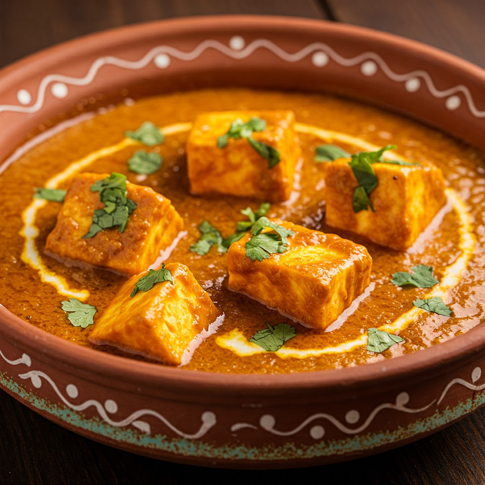

Shahi Paneer
Ingredients
- 200g paneer (cubed)
- 2 tbsp oil or ghee
- 1 onion (finely chopped)
- 2 tomatoes (pureed)
- 1 tbsp cashew paste or 8–10 cashews (soaked and blended)
- 1 tsp ginger-garlic paste
- 1/2 tsp turmeric
- 1 tsp coriander powder
- 1/2 tsp garam masala
- 1/4 cup fresh cream
- Salt and sugar to taste
- Fresh coriander for garnish
Steps
- Heat oil or ghee in a pan. Sauté onions until golden.
- Add ginger-garlic paste and cook till raw smell goes away.
- Add tomato puree, turmeric, coriander powder, salt, and a pinch of sugar. Cook until oil separates.
- Stir in cashew paste and mix well.
- Add cream and garam masala. Simmer for 2–3 minutes.
- Add paneer cubes and gently coat in the gravy. Simmer for another 3–4 minutes.
- Garnish with coriander and serve with naan or rice.